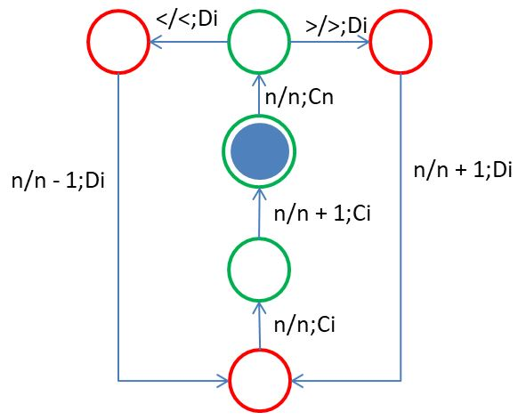
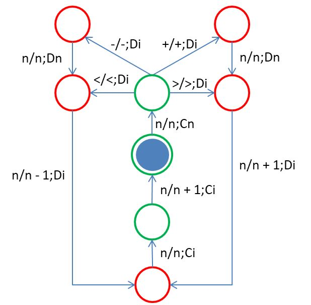
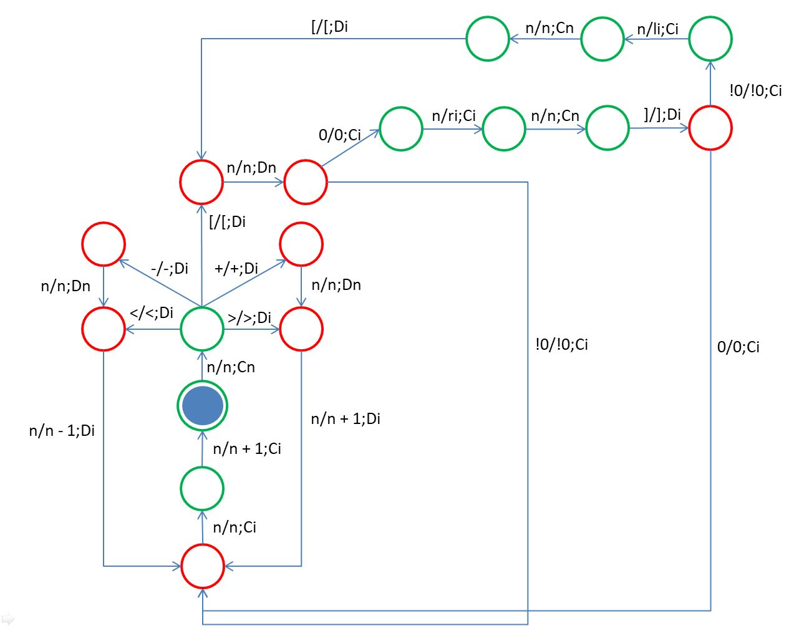

Brainfuck 看狀態
December 16, 2021目前的 Brainfuck 機器形式上改成單磁帶之後，很容易發現運行過程中，不斷地有兩個主要狀態之間轉移，就程式面上，就是 CommandState 與 DataState 兩個物件不斷地換手執行各自職責，然而，只有這兩個主要狀態嗎？
不！實際上，CommandState 與 DataState 也還是複雜的，在執行各自職責時，內部還有許多小狀態，也就是說，你可以將 CommandState 與 DataState，各自看成是一台小機器，這兩台小機器執行任務時，也會有自己的狀態轉移。
>、< 狀態轉移
首先，必須先定義什麼不是狀態，什麼是狀態。狀態並不是指磁帶上存了什麼資料，不然的話，因為 Brainfuck 的磁帶長度是無限的，Brainfuck 就會有無限的狀態了；狀態是指接下來可以讀取什麼字元、寫入什麼字元、如何移動磁頭，然後進入哪個狀態，或者更簡單的說法，機器等待下個指示的一種條件。
為了更簡單地表示可以讀取什麼字元、寫入什麼字元、如何移動磁帶，接下來使用 a/b;M 這樣的形式，表示可以讀取 a 寫入 b，接著以 M 方式移動磁頭。
例如，可以使用下圖來表示 Brainfuck 在 >、< 指令下，如何進行狀態轉移：

Brainfuck 的初始狀態是藍色實心圓，若正確執行完畢也是回到藍色實心圓，因此該狀態也是接受狀態，也就是機器認為指令無誤可以接受並執行的話，會停留在接受狀態。
綠圓表示指令狀態，有許多綠圓表示那些都是指令狀態的子狀態，例如，從初始狀態出發，從磁帶讀取數字 n 並寫入 n，然後移動至指令正確位置，這邊以 Cn 表示該移動，雖然實際上沒有寫入數字 n 的動作，不過為了符合方才的 a/b;M 形式，在不變更磁帶內容的情況時，會以 n/n 來表示。
在磁頭移動並讀取正確指令之後，會轉移至資料狀態，以紅色圓表示，同樣地，有許多紅色圓，這表示它們都是資料狀態的子狀態，Di 表示移動至資料區段的索引位置，由於 > 與 < 只是單純移動磁頭，只要改變索引位置處的值就可以了，因此會是 n/n + 1;Di 或 n/n - 1;Di，每次讀寫完資料區段，都會回到資料索引位置，接著回到指令索引位置，指令前進，然後回到接受狀態（初始狀態）。
加上更多指令
按照相同的方式，可以加上 +、- 指令時的狀態轉移：

Dn 表示根據資料索引的數字 n，移動至資料讀寫的正確位置，依照上圖，無論是 >、<、+ 或 - 指令，最後都會回到接受狀態，然而，你應該知道，像 [、] 如果沒有寫好，是會形成無窮迴圈的，這是因為狀態轉移上，確實是形成了一個迴圈：

ri 表示 ] 的索引，li 表示 [ 的索引，可以看到，在某些條件下，Brainfuck 會一直在右上方的迴圈中持續狀態轉移，這就是會形成無窮迴圈的原因，此時機器停不了機，無法回到接受狀態，你就得不到任何答案了。
看起來很複雜對吧！實際上，這圖還省略了許多狀態沒有畫出來，這也就是為什麼 Brainfuck 實際上還算是很複雜的機器。
也許你也發現了，這樣的狀態轉移圖，好像是在畫演算法的流程圖，實際上就是如此，演算法從某些角度來看，確實就是在形式化需求，將之轉換為各種狀態，並定義出狀態之間如何轉移的過程，只不過描述的方式更為高階，不會是讀取符號、寫入符號、移動磁頭這樣的低階方式。
不過，就算是上面的 Brainfuck 狀態轉移圖，也還是包含了一些高階的描述方式，像是 n/n + 1、n/n - 1，這部份終究還是借助了 JavaScript 來執行加、減法，你可以想成是，JavaScript 環境提供了加、減法的機器，Brainfuck 在需要的時候直接拿來用。
那麼 Brainfuck 本身可以實作出加、減法機器，而不借助 JavaScript 環境嗎？那就要更進一步地，將加、減法這類的運算，拆解為更基本的簡單運算，進一步地，你可以將 JavaScript 環境提供的功能，全部都進行這類的拆解，看看 Brainfuck 是否可自行達成。